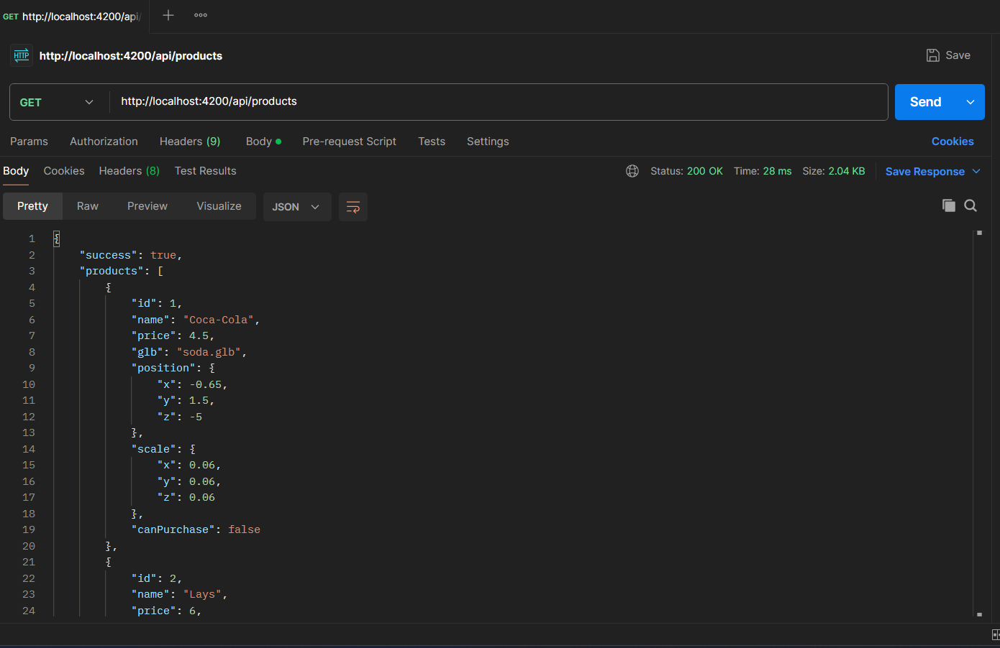

Distributeur Automatique - Documentation
Project Overview
The vending machine simulation is a web-based application designed to replicate the functionality of a physical vending machine. It allows users to interact with a 3D interface to select products, insert coins, and receive change. The backend API handles all transaction logic, ensuring smooth operations.
This project is ideal for demonstrating concepts such as object-oriented programming, API design, and frontend-backend integration.
Installation & Setup
There are two ways to set up and run the vending machine simulation:
Option 1: Standard Installation (GitHub + VS Code)
Prerequisites
- Node.js (v14.0.0 or later)
- npm (v6.0.0 or later)
- Git
- Visual Studio Code (recommended)
Steps
- Clone the repository:
git clone https://github.com/designcraftsman/distributeur-automatique.git
cd distributeur-automatique - Open the project in VS Code.
- Set up the backend:
cd backend
npm install
npm startThe API will be available at
http://localhost:4200 - In a new terminal, set up the frontend:
cd frontend
npm install
npm startThe application will be available at
http://localhost:3000
Option 2: Docker Installation
Prerequisites
- Docker
- Docker Compose
Steps
- Clone the repository:
git clone https://github.com/designcraftsman/distributeur-automatique.git
cd distributeur-automatique - Pull the Docker images:
docker pull designcraftsman/vending-machine-api:latest
docker pull designcraftsman/vending-machine-frontend:latest - Start the application using Docker Compose:
docker-compose up - Access the application:
Open your browser and navigate to:
http://localhost:3000for the frontendhttp://localhost:4200for the backend API
Technologies Used
Backend Technologies
The backend of the vending machine simulation is built using the following technologies:
- Node.js: A JavaScript runtime environment used to build the backend server. It provides an efficient and scalable platform for handling API requests and managing application logic.
- Express: A lightweight web application framework for Node.js, used to define API routes, handle HTTP requests, and manage middleware for the application.
These technologies ensure a fast and reliable backend capable of handling vending machine operations like product selection, payment processing, and transaction management.
API Testing Tools
To test the API routes and ensure proper functionality, the following tool is used:
- Postman: A popular API testing tool used to send requests to the backend routes and verify their responses. It allows developers to test endpoints like inserting coins, selecting products, and confirming transactions efficiently.
Postman simplifies the process of debugging and validating the backend logic during development.
Frontend Technologies
The frontend of the vending machine simulation is built using modern web technologies to create an interactive and visually appealing user interface:
- React.js: A JavaScript library for building user interfaces. It is used to create the dynamic components of the vending machine, such as the 3D interface and product selection panel.
- A-Frame: A web framework for building 3D and VR experiences. It is used to render the vending machine and products in a realistic 3D environment.
- Bootstrap: A CSS framework for styling the application and ensuring responsiveness across devices. It provides pre-designed components for a clean and professional look.
- SASS: A CSS preprocessor used to write modular and maintainable styles for the application. It simplifies the process of managing complex stylesheets.
These frontend technologies work together to deliver a seamless and engaging user experience for interacting with the vending machine simulation.
Development & Deployment Tools
The project utilizes these essential tools for development, testing, and deployment:
- Visual Studio Code: A lightweight but powerful source code editor used for developing both frontend and backend components. Its extensive ecosystem of extensions provides support for JavaScript, React, and Node.js development, making it ideal for this project.
- Docker: A platform for developing, shipping, and running applications in containers. Docker ensures consistent environments across development and production, simplifying deployment and eliminating "it works on my machine" problems.
These tools enhance the development workflow by providing a consistent environment and powerful editing capabilities, ensuring code quality and deployment reliability throughout the project lifecycle.
UML Diagrams
Use Case Diagram
This diagram illustrates the interactions between the user and the vending machine system.
The user can perform actions like inserting money, browsing the product catalog, adding products to the cart, confirming or canceling a transaction.
The system performs internal operations such as updating the balance, verifying the balance, dispensing the product, returning the change, and resetting its state.

Sequence Diagram
This diagram details the step-by-step flow of purchasing a product from the vending machine:
- The user starts by requesting to view the product catalog.
- The user inserts coins; the system updates and displays the current balance.
- The user selects products, and the system adds them to the cart.
- Once the balance is sufficient, the user confirms the transaction.
- The system calculates change, resets internal state, dispenses the change, and finally dispenses the selected products.
Class Diagram
This diagram shows the object-oriented structure of the vending machine system, including the relationships between key classes:
- VendingMachine: The main class managing balance, cart, inventory, payments, and product dispensing.
- Cart: Holds selected products; allows adding and clearing products and calculating total amount.
- ProductInventory: Maintains available products and checks product availability.
- PaymentProcessor: Handles balance, money insertion, change calculation, and balance reset.
- Dispenser: Responsible for dispensing products and change.
- Product: Represents individual items with ID, name, and price.
- AcceptedCoins (Enumeration): Lists allowed coin denominations (e.g., 0.5MAD, 1MAD, etc.).
API
Overview: The API is responsible for handling backend operations such as managing products, processing transactions, and maintaining user balances.
File tree:

Folders
- src: Contains the main source code for the API, including all the subfolders and files required for backend functionality.
- routes: Defines the API endpoints and their logic. Each route corresponds to a specific functionality, such as inserting coins, selecting products, confirming purchases, and canceling transactions.
- models: Contains the models used in the application.
- services: Implements the core business logic for the vending machine operations. This includes managing the cart, inventory, payment processing, and dispensing products and change.
- utils: Contains utility files that provide helper functions or constants used across the application.
- assets: Stores static files such as 3D models (`.glb`) used for rendering products in the vending machine interface. Example: `objects/candy_bar.glb`, `objects/chips.glb`.
Files
- server.js: The entry point of the API. Sets up the Express server, connects to the database, and initializes middleware and routes.
- routes/VendingRoutes.js: Defines routes for vending machine operations, such as inserting coins, selecting products, confirming purchases, and canceling transactions.
- models/Product.js: Defines the schema for products, including fields like `id`, `name`, `price`, `glb` (3D model file), `position`, and `scale` for rendering in the vending machine interface.
- controllers/VendingController.js: Implements the logic for vending machine operations. Handles requests and responses for routes like inserting coins, selecting products, and confirming transactions.
- services/VendingMachineService.js: Manages the core vending machine functionality, including payment processing, product selection, and dispensing products and change.
- services/PaymentService.js: Handles payment-related operations, such as inserting money, calculating change, and managing the balance.
- services/InventoryService.js: Manages the inventory of products in the vending machine. Provides methods to check product availability and retrieve product details.
- services/DispenserService.js: Handles the dispensing of products and change. Simulates the physical dispensing process in the vending machine.
- services/CartService.js: Manages the user's cart during a transaction. Tracks selected products and calculates the total amount.
Routes Testing
List of Products: This route retrieves all available products in the vending machine. It ensures the frontend displays accurate product information, including names, prices, positions, and scales. 
- Method: GET
- Endpoint:
/api/products - Expected Response: JSON array of products with fields like:
id: Unique identifier for the product.name: Name of the product.price: Price of the product.position: Specifies the 3D coordinates (x,y,z) to correctly position the product in the vending machine interface.scale: Defines the size of the product in the 3D environment to ensure it appears proportionate and realistic.
Insert Coin: This route handles coin insertion by the user. It updates the backend with the amount inserted and ensures the frontend reflects the updated balance.
- Method: POST
- Endpoint:
/api/insert-coin - Request Body:
{ "amount": 5 } - Expected Response: Updated balance in JSON format, e.g.,
{ "balance": 5 }.
Select a Product: This route allows the user to select a product. It verifies if the user has sufficient balance and updates the backend accordingly.
- Method: POST
- Endpoint:
/api/select-product - Request Body:
{ "productId": "123" } - Expected Response: Confirmation of product selection or an error message if the balance is insufficient.
Confirm Transaction: This route finalizes the purchase. It deducts the product price from the balance, updates the stock, and calculates the change to be dispensed.

- Method: POST
- Endpoint:
/api/confirm-transaction - Expected Response: JSON object with fields like
dispensedProducts,changeandbalance.
Cancel: This route cancels the current transaction and refunds the inserted coins. It ensures the backend resets the balance and the frontend reflects the cancellation.

- Method: POST
- Endpoint:
/api/cancel - Description: Cancels the current transaction, empties the cart, and returns all inserted coins as change.
- Expected Response: JSON object with the refunded amount as change, e.g.,
{ "change": {"10": 1, "1": 2}, "balance": 0 }.
Reset: This route completely resets the vending machine to its initial state. It clears the cart, resets the balance to zero, and empties any pending transactions without returning change.
- Method: POST
- Endpoint:
/api/reset - Description: Performs a complete system reset, returning the machine to its initial state without processing refunds.
- Expected Response: JSON object with the following structure:
{ "success": true, "message": "Machine reset successfully", "balance": 0, "cart": [], "change": {} } - Usage: This endpoint is typically used for administrative purposes or when needing to clear all pending transactions and start fresh. Unlike the cancel endpoint, it does not return inserted coins as change.
Frontend
Overview: The frontend is responsible for creating an interactive user interface for the vending machine simulation. It uses modern web technologies to render a 3D vending machine, handle user interactions, and communicate with the backend API.
File tree:


Folders
- src: Contains the main source code for the frontend application, including components, assets, and styles.
- components: Includes reusable React components such as `VendingMachine3D.jsx`, `Menu.jsx`, `CoinPanel.jsx`, and `Keypad.jsx` that form the vending machine interface.
- assets: Stores static files such as images, icons, and 3D models (`.glb`) used in the vending machine simulation.
- styles: Contains CSS and SASS files for styling the application and ensuring responsiveness.
Files
- index.js: The entry point of the React application. It renders the root component and initializes the frontend.
- App.jsx: The main application component that sets up routing and renders the vending machine interface.
- components/VendingMachine3D.jsx: Implements the 3D vending machine interface using A-Frame and React. Handles product selection, coin insertion, and cart management.
- components/Menu.jsx: Displays the menu panel for user interactions, including coin insertion, keypad input, and cart actions.
- components/CoinPanel.jsx: Handles coin insertion and animates coins being added to the vending machine.
- components/Keypad.jsx: Provides a numeric keypad for selecting products by their ID.
- assets/objects: Contains 3D models (`.glb`) for rendering products in the vending machine interface.
- assets/coins: Stores images of coins used for the coin panel and change display.
- styles/style.css: Defines global styles for the application, ensuring a consistent look and feel.
Use of A-Frame
Overview: A-Frame is a web framework for building 3D and VR experiences. It is used to render the vending machine and products in a realistic 3D environment.
- Scene Setup: Defines the 3D environment with sky and ground elements.
- Vending Machine Model: Renders the vending machine using `.glb` files.
- Product Display: Displays products as clickable 3D objects.
- Interaction: Allows users to interact with products via events like `click`.
Key VendingMachine3D Functions
Overview: The VendingMachine3D component contains several critical functions that manage the 3D interface, product selection, cart management, and user interactions within the simulated environment.
- handleSelectProductByNumber:
Allows users to select products using their ID numbers from the keypad, verifying sufficient balance before adding to the cart.
const handleSelectProductByNumber = () => { const idx = parseInt(productNumberInput, 10) - 1; if (!isNaN(idx) && idx >= 0 && idx < products.length) { const product = products[idx]; if (balance < product.price) { // Not enough balance for this product setProductNumberInput(''); return; } onSelectProduct(product.id); setCart(prev => [...prev, product]); setProductNumberInput(''); } }; - handleKeypadOk:
Processes keypad input when the user confirms a product selection, validating the product number and balance.
const handleKeypadOk = () => { if (productNumberInput === '') return; const idx = parseInt(productNumberInput, 10) - 1; if (!isNaN(idx) && idx >= 0 && idx < products.length) { const product = products[idx]; // Check if we have enough balance for this specific product if (balance >= product.price) { setCart(prev => [...prev, product]); onSelectProduct(product.id); setProductNumberInput(''); } else { // Provide feedback - not enough balance for this product console.log(`Not enough balance for ${product.name}`); setProductNumberInput(''); } } else { // Invalid product number setProductNumberInput(''); } }; - handleConfirmPurchase:
Finalizes the purchase process by sending the current cart to the parent component for processing.
const handleConfirmPurchase = () => { if (cart.length === 0) return; if (typeof onConfirmPurchase === 'function') { onConfirmPurchase(); } }; - resetLocalState:
Resets all local state in the VendingMachine3D component, including cart, delivered products, and inputs.
const resetLocalState = () => { setCart([]); setDeliveredProducts([]); setProductNumberInput(''); setInsertedCoins([]); if (typeof setCoinInput === 'function') setCoinInput(''); // Call the parent's handleReset function if (typeof handleReset === 'function') { handleReset(); } }; - cartSummary:
Aggregates items in the cart by product ID to show the quantity of each product selected.
const cartSummary = cart.reduce((acc, item) => { const found = acc.find(i => i.id === item.id); if (found) found.quantity += 1; else acc.push({ ...item, quantity: 1 }); return acc; }, []);
These functions work together to create a seamless user experience in the 3D vending machine environment, handling everything from product selection to purchase confirmation while maintaining appropriate state throughout the transaction flow.
Interface UI
Key Interface Components
- Menu Panel: Displays balance, cart, and change. Includes buttons for confirming or canceling transactions.
- Keypad: Allows users to input product numbers. Includes buttons for adding products and clearing input.
- Coin Panel: Displays available coins for insertion. Animates coins being added to the vending machine.
- 3D Interface: Renders the vending machine and products. Allows users to interact with products directly.
Transaction Flow UI States
Initial State
When the application first loads, the vending machine displays available products with their prices. The balance is zero, and the cart is empty. Users can browse products but cannot make selections until coins are inserted.
- Zero balance displayed
- Empty cart
- All products visible but not selectable
- Coin insertion panel ready
Initial state with zero balance
After Coin Insertion
Once coins are inserted, the balance updates and products that can be purchased with the current balance become highlighted and selectable. The UI provides visual cues to indicate which products are available based on the current balance.
- Updated balance reflecting inserted coins
- Affordable products highlighted
- Keypad activated for product selection
- Animated coin insertion feedback
UI after coins have been inserted
Product Selection
When products are selected, they appear in the cart with quantity indicators. The total price is calculated and displayed. Users can continue adding products as long as they have sufficient balance.
- Selected products shown in cart
- Quantity indicators for multiple selections
- Total price calculation
- Confirm purchase button activated
UI with selected products in cart
Purchase Confirmation
After confirming the purchase, the UI shows the dispensed products and any change returned. The balance resets to zero and the cart empties, preparing for the next transaction.
- Dispensed products displayed at bottom of machine
- Change calculation and display
- Reset balance and cart
- Transaction completion message
UI after purchase confirmation
The interface provides clear visual feedback throughout the entire transaction process, making it intuitive for users to understand their current balance, selected products, and available actions at each step.
Video Demonstration
Complete Vending Machine Walkthrough
This video provides a comprehensive demonstration of the vending machine simulation, showcasing all major features and user interactions:
- Interface exploration and layout overview
- Coin insertion process with real-time balance updates
- Product selection using both 3D interface and keypad
- Cart management functionality
- Transaction confirmation workflow
- Change calculation and dispensing
- Error handling and validation
- Complete transaction lifecycle
Resources
Overview: Below are some helpful resources related to the vending machine simulation project, including documentation, tutorials, and tools.
- Project Repository: GitHub Repository - Access the source code and documentation for the project.
- A-Frame Documentation: A-Frame Official Documentation - Learn more about building 3D and VR experiences.
- React Documentation: React Official Documentation - Explore React concepts and tutorials.
- Bootstrap Documentation: Bootstrap Official Documentation - Learn how to use Bootstrap for responsive design.
- Postman: Postman API Testing Tool - Test and debug API endpoints efficiently.
- Docker: Docker Documentation - Learn how to use Docker for containerized applications.
- Node.js: Node.js Official Documentation - Learn about the JavaScript runtime used for the backend.
- Express: Express Official Documentation - Explore the lightweight web framework used for API development.
- SASS: SASS Official Documentation - Learn how to write modular and maintainable styles for the application.
- Sketchfab: Sketchfab - Explore and download 3D models for use in the vending machine simulation.
These resources will help you understand the technologies used in the project and guide you through development and testing.